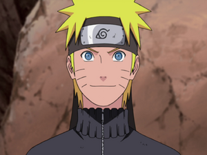
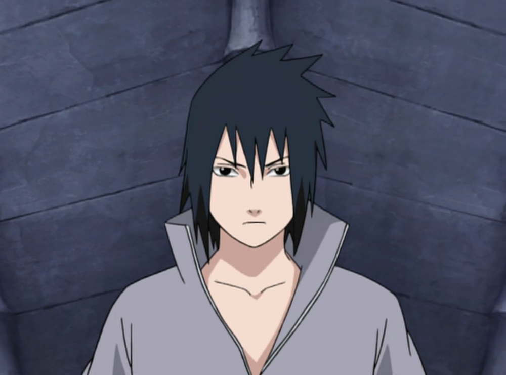
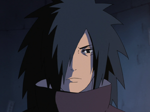

Naruto Uzumaki, the hero of the fourth war and the holder of the ninetail fox.
Growing up in a harsh enviorment and forced to adapt to being alone,
Naruto grew up to be the hero he always wanted to be seen as.

Sasuke Uchiha, the last Uchiha of the clan that was once known as the strongest clan ever.
Sasuke's lived a life of hatred and revenge as his whole clan was killed by his brother. He vows to one day take revenge on his brother.

Madara Uchiha, the Ghost of the Uchiha.
One of the first ninja ever, Madara is different then his clan and hates the way they did not listen to him.
He know plots to take over the shinobi world.

Minato Namikaze, the foruth Hokage and fastest ninja alive.
His speed and teleportation is second to none. Before his death, he left his wishes for world peace with his son, Naruto Uzumaki.